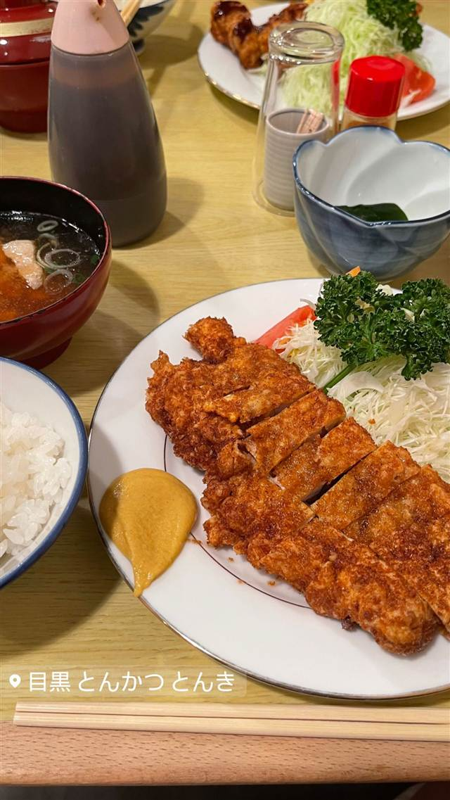

とんかつ とんき 目黒本店
卵とパン粉を3回ずつ付けて2度揚げする、1939年創業のロースかつ
目黒 とんかつ とんき
1939年創業、目黒を代表する老舗とんかつ店。創業以来変わらぬ製法で仕込むロースかつが名物で、開店と同時に行列ができる。かつて歴史小説家・池波正太郎も愛した一軒。
TRIVIA
へえ、という話
- 歴史小説家・故池波正太郎が「とんき」の大ファンだったことで知られる
- 1967年（昭和42年）に現在の場所に移転し、店は80年以上の歴史を持つ
| 創業 | 1939年（昭和14年）創業 |
|---|---|
| 看板 | ロースかつ定食 |
| こだわり | 創業当時から変わらぬ製法で、卵とパン粉を3回ずつ付けてじっくり2度揚げする |
| 予算 | 夜 ¥2,000～¥2,999 |
| 定休日 | 火曜・第3月曜 |
| 予約 | 予約可 |
| 場所 | 目黒駅 東京都目黒区下目黒1-1-2 |
| 注意 | 開店と同時に行列ができる人気店。予約なしの場合は開店前から並ぶ必要がある（予約すると個室利用可）。営業は16時から22時半、火曜定休 |
食べたもの：とんかつ定食
NEARBY
近い店・同じ系統の店
-
 ★7
二郎系(直系) 目黒駅
ラーメン二郎 目黒店
慶應大学応援部出身の店主が開いた二郎の老舗
昼 ～¥999 夜 ～¥999
★7
二郎系(直系) 目黒駅
ラーメン二郎 目黒店
慶應大学応援部出身の店主が開いた二郎の老舗
昼 ～¥999 夜 ～¥999
-
 イタリアン 目黒駅（西口）
TRUNK（トランク）
国産和牛や北海道鹿肉、80種のワインと味わうイタリアン
昼 ¥1,000～¥1,999 夜 ¥4,000～¥4,999
イタリアン 目黒駅（西口）
TRUNK（トランク）
国産和牛や北海道鹿肉、80種のワインと味わうイタリアン
昼 ¥1,000～¥1,999 夜 ¥4,000～¥4,999
-
 ピザ 目黒駅（東口徒歩2分）
Pizzeria&Trattoria GONZO 目黒店
専用石窯で焼く薪窯ナポリピッツァと炭火焼きの肉料理が通し営業で味わえる
夜 ¥5,000～¥5,999
ピザ 目黒駅（東口徒歩2分）
Pizzeria&Trattoria GONZO 目黒店
専用石窯で焼く薪窯ナポリピッツァと炭火焼きの肉料理が通し営業で味わえる
夜 ¥5,000～¥5,999
-
 エスニック・各国料理 目黒駅（東口）
Cabe Meguro（チャベ目黒店）
インドネシア語で唐辛子を意味する全メニューハラール対応のナシゴレン
昼 ¥1,000～¥1,999 夜 ¥3,000～¥3,999
エスニック・各国料理 目黒駅（東口）
Cabe Meguro（チャベ目黒店）
インドネシア語で唐辛子を意味する全メニューハラール対応のナシゴレン
昼 ¥1,000～¥1,999 夜 ¥3,000～¥3,999
-
 スープカレー 目黒／恵比寿
薬膳スープカレー・シャナイア（Shania）
元ITエンジニアが脱サラ、フレンチ仕込みの薬膳スープカレー
昼 ¥1,000～¥1,999 夜 ¥2,000～¥2,999
スープカレー 目黒／恵比寿
薬膳スープカレー・シャナイア（Shania）
元ITエンジニアが脱サラ、フレンチ仕込みの薬膳スープカレー
昼 ¥1,000～¥1,999 夜 ¥2,000～¥2,999
-
 ケーキ・パフェ 目黒駅
PARLOR NOON
1階のアジア料理店シェフと共同開発したプリンとトースト
昼 ¥1,000～¥1,999 夜 ¥2,000～¥2,999
ケーキ・パフェ 目黒駅
PARLOR NOON
1階のアジア料理店シェフと共同開発したプリンとトースト
昼 ¥1,000～¥1,999 夜 ¥2,000～¥2,999